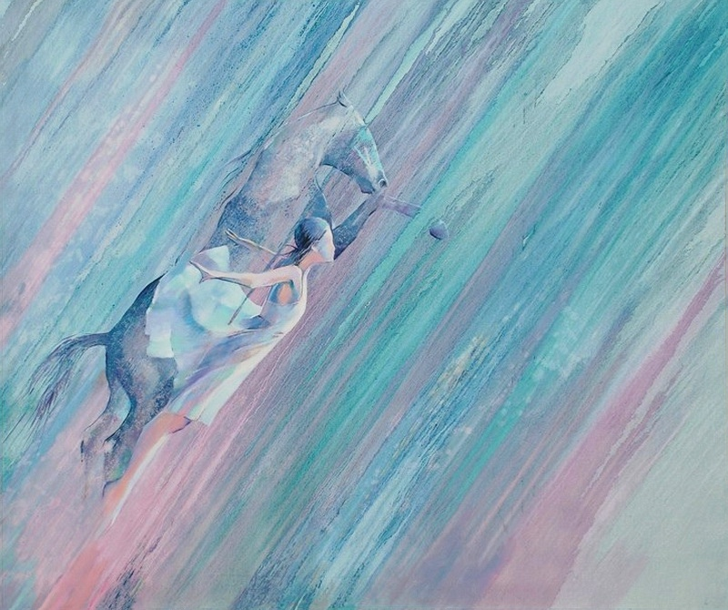

Zhenis Kakenovich

Details:
b. 1956, Kazakhstan, Almaty

Zhenis Kakenovich, Desert Mirage, 2019, 243 cm x 183 cm, Oil and Acrylic on Canvas.
Zhenis Kakenovich: A Contemporary Master of Kazakh Art
Zhenis Kakenovich’s art often explores the relationship between Kazakhstan’s natural landscapes and modernity. His evocative use of colors and texture brings to life the serene beauty and challenges of life in Central Asia.
Kakenovich's paintings often feature warm desert tones, abstract forms, and an interplay between traditional Kazakh symbols and contemporary techniques.